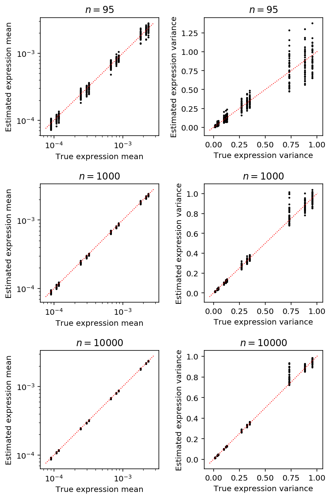
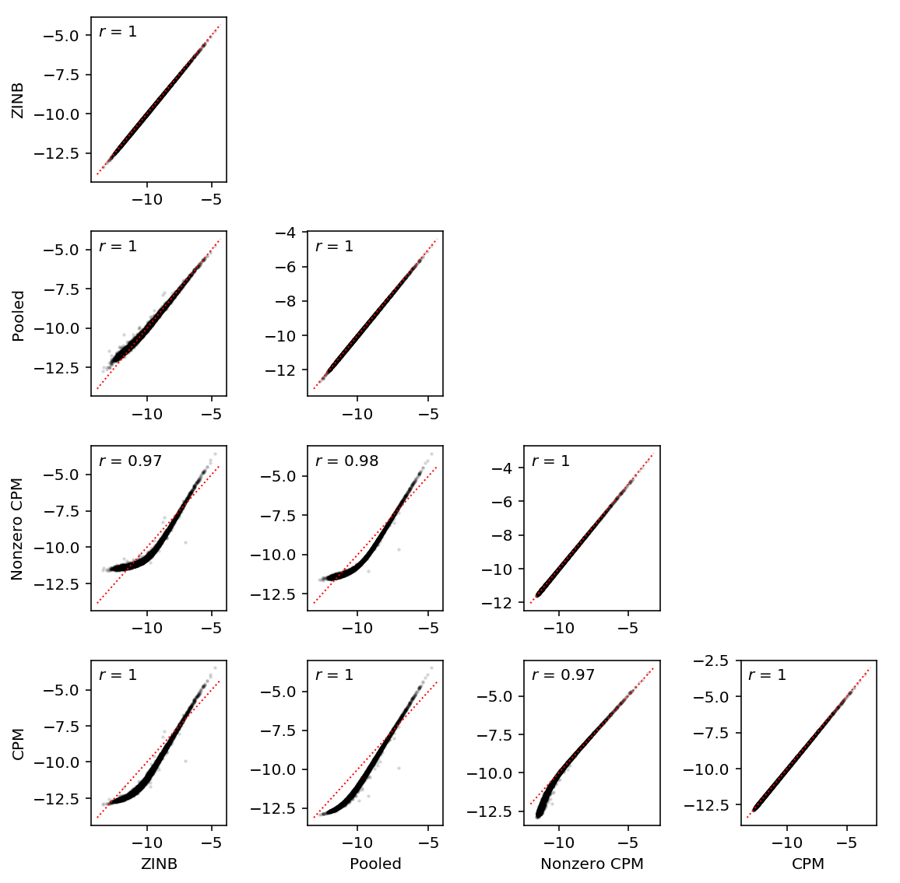
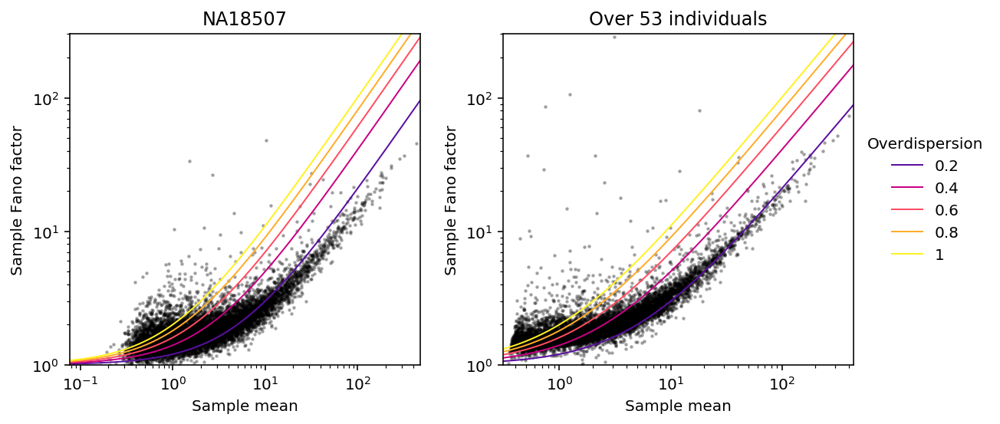
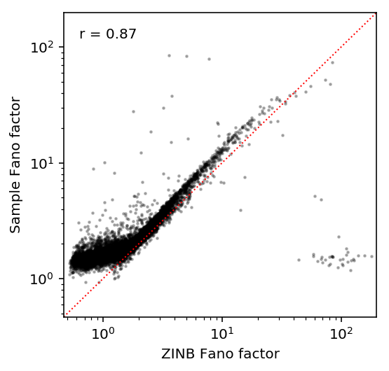

Mean/dispersion estimation
Introduction
We take a modular approach to call QTLs:
- Estimate a mean and a dispersion for each individual
- Treat the mean/dispersion as continuous phenotypes and perform QTL mapping
Here, we solve (1).
- We implement GPU-based ML estimation of a zero-inflated negative binomial model
- We show in simulation that the estimates are unbisaed
- We compare ZINB estimates of mean expression against sample-based estimates
- We estimate Fano factors accounting for different depths across samples and different means across individuals
Model specification
Let \(r_{ijk}\) denote the number of molecules for individual \(i\), cell \(j\), gene \(k\). Let \(R_{ij}\) denote a size factor for each cell.
\[ r_{ijk} \sim \pi_{ik} \delta_0(\cdot) + (1 - \pi_{ik})\text{Poisson}(\cdot; R_{ij} \mu_{ik} u_{ijk}) \]
\[ u_{ijk} \sim \text{Gamma}(\cdot; \phi_{ik}^{-1}, \phi_{ik}^{-1}) \]
Here, \(\mu_{ik}\) is proportional to relative expression (Pachter 2011), and \(\phi_{ik}\) is the variance of expression noise.
Considering just the Poisson component, marginalizing out \(u\) yields the log likelihood:
\[ l(\cdot) = \ln(1 - \pi_{ik}) + r_{ijk} \ln\left(\frac{R_{ij}\mu_{ik}\phi_{ik}}{1 + R_{ij}\mu_{ik}\phi_{ik}}\right) - \phi_{ik}^{-1} \ln(1 + R_{ij}\mu_{ik}\phi_{ik}) + \ln \Gamma(r_{ijk} + \phi_{ik}^{-1}) - \ln \Gamma(r_{ijk} + 1) - \ln \Gamma(\phi^{-1}) \]
Then, marginalizing over the mixture yields the log likelihood:
\[ \ln p(r_{ijk} \mid \cdot) = \ln(\pi_{ik} + \exp(l(\cdot)))\ \text{if}\ r_{ijk} = 0 \]
\[ \ln p(r_{ijk} \mid \cdot) = l(\cdot)\ \text{otherwise} \]
We have enough observations per mean/dispersion parameter that simply minimizing the negative log likelihood should give reasonable estimates.
This model is equivalent to a model where we assume that the underlying rate is a point-Gamma mixture:
\[ r_{ijk} \mid \lambda_{ijk} \sim \mathrm{Poisson}(\cdot; R_{ij}\lambda_{ijk}) \]
\[ \lambda_{ijk} \sim \pi_{ik} \delta_0(\cdot) + (1 - \pi_{ik}) \text{Gamma}(\lambda_{ijk}; \phi_{ik}^{-1}, \phi_{ik}^{-1}\mu_{ik}^{-1}) \]
The Gamma component of this mixture corresponds to \(\mu_{ik}u_{ijk}\) in the model above. Considering just the Gamma component, marginalizing out \(\lambda\) yields the log likelihood:
\[ \tilde{l}(\cdot) = \ln(1 - \pi_{ik}) + r_{ijk} \ln\left(\frac{R_{ij}}{R_{ij} + \phi_{ik}^{-1}\mu_{ik}^{-1}} \right) + \phi_{ik}^{-1} \ln\left(\frac{\phi_{ik}^{-1}\mu_{ik}^{-1}}{R_{ij} + \phi_{ik}^{-1}\mu_{ik}^{-1}}\right) + \ln\Gamma(r_{ijk} + \phi_{ik}^{-1}) - \ln\Gamma(r_{ijk} + 1) - \ln\Gamma(\phi_{ik}^{-1}) \]
It is clear \(l = \tilde{l}\), and therefore the marginal likelihoods (over the mixture components) are also equal.
Tensorflow implementation
We optimize all of the parameters together, using one-hot encoding to map parameters to data points. This makes inference more amenable to running on the GPU.
Use tensorflow to automatically differentiate the negative log likelihood and
perform gradient descent.
def nb_llik(x, mean, inv_disp): """Log likelihood of x distributed as NB See Hilbe 2012, eq. 8.10 mean - mean (> 0) inv_disp - inverse dispersion (> 0) """ return (x * tf.log(mean / inv_disp) - x * tf.log(1 + mean / inv_disp) - inv_disp * tf.log(1 + mean / inv_disp) + tf.lgamma(x + inv_disp) - tf.lgamma(inv_disp) - tf.lgamma(x + 1)) def zinb_llik(x, mean, inv_disp, logodds): """Log likelihood of x distributed as ZINB See Hilbe 2012, eq. 11.12, 11.13 mean - mean (> 0) inv_disp - inverse dispersion (> 0) logodds - logit proportion of excess zeros """ # Important identities: # log(x + y) = log(x) + softplus(y - x) # log(sigmoid(x)) = -softplus(-x) case_zero = -tf.nn.softplus(-logodds) + tf.nn.softplus(nb_llik(x, mean, inv_disp) + tf.nn.softplus(-logodds)) case_non_zero = -tf.nn.softplus(logodds) + nb_llik(x, mean, inv_disp) return tf.where(tf.less(x, 1), case_zero, case_non_zero) # https://github.com/junfengwen/AMSGrad/blob/a00e3f4bcb3ba16b2fe67c75dd8643670bded0c9/optimizers.py from tensorflow.python.framework import ops from tensorflow.python.ops import control_flow_ops from tensorflow.python.ops import math_ops from tensorflow.python.ops import gen_math_ops from tensorflow.python.ops import variable_scope from tensorflow.python.training import optimizer class AMSGrad(optimizer.Optimizer): """The AMSGrad algorithm in the paper Reddi, Kale, Kumar, On the Convergence of Adam and Beyond, ICLR 2018 https://openreview.net/forum?id=ryQu7f-RZ """ def __init__(self, learning_rate=0.001, beta1=0.9, beta2=0.999, epsilon=1e-8, use_locking=False, name="AMSGrad"): super(AMSGrad, self).__init__(use_locking, name) self._lr = learning_rate self._beta1 = beta1 self._beta2 = beta2 self._epsilon = epsilon self._lr_t = None self._beta1_t = None self._beta2_t = None self._epsilon_t = None self._beta1_power = None self._beta2_power = None def _create_slots(self, var_list): first_var = min(var_list, key=lambda x: x.name) create_new = self._beta1_power is None if create_new: with ops.colocate_with(first_var): self._beta1_power = variable_scope.variable(self._beta1, name="beta1_power", trainable=False) self._beta2_power = variable_scope.variable(self._beta2, name="beta2_power", trainable=False) # Create slots for the first and second moments. for v in var_list: # first moment est self._zeros_slot(v, "first_mom", self._name) # second moment est self._zeros_slot(v, "second_mom", self._name) self._zeros_slot(v, "second_mom_max", self._name) def _prepare(self): self._lr_t = ops.convert_to_tensor(self._lr) self._beta1_t = ops.convert_to_tensor(self._beta1) self._beta2_t = ops.convert_to_tensor(self._beta2) self._epsilon_t = ops.convert_to_tensor(self._epsilon) self._one_minus_beta1 = ops.convert_to_tensor(1. - self._beta1) self._one_minus_beta2 = ops.convert_to_tensor(1. - self._beta2) def _apply_dense(self, grad, var): # bias-corrected learning rate lr = self._lr_t * math_ops.sqrt(1. - self._beta2_power) / (1. - self._beta1_power) first_mom = self.get_slot(var, "first_mom") second_mom = self.get_slot(var, "second_mom") second_mom_max = self.get_slot(var, "second_mom_max") first_update = first_mom.assign(self._beta1_t * first_mom + self._one_minus_beta1 * grad, use_locking=self._use_locking) second_update = second_mom.assign(self._beta2_t * second_mom + self._one_minus_beta2 * math_ops.square(grad), use_locking=self._use_locking) # AMSGrad compared to ADAM second_max_update = second_mom_max.assign(gen_math_ops.maximum(second_mom_max, second_update)) var_update = var.assign_sub(lr * first_update / (math_ops.sqrt(second_max_update) + self._epsilon_t), use_locking=self._use_locking) return control_flow_ops.group(*[var_update, first_update, second_update, second_max_update]) def _apply_sparse(self, grad, var): # just a copy of the dense case, not properly implemented yet return self._apply_dense(grad, var) def _finish(self, update_ops, name_scope): # Update the power accumulators. with ops.control_dependencies(update_ops): with ops.colocate_with(self._beta1_power): update_beta1 = self._beta1_power.assign( self._beta1_power * self._beta1, use_locking=self._use_locking) update_beta2 = self._beta2_power.assign( self._beta2_power * self._beta2_t, use_locking=self._use_locking) return control_flow_ops.group(*update_ops + [update_beta1, update_beta2], name=name_scope) def fit(umi, onehot, size_factor, design, learning_rate=1e-2, max_epochs=1000, fit_null=False, return_llik=False): """Return estimated log mean and log dispersion. umi - count matrix (n x p; float32) onehot - mapping of individuals to cells (m x n; float32) size_factor - size factor vector (n x 1; float32) design - confounder matrix (n x q; float32) fit_null - whether to fit the null model (common dispersion) return_llik - whether to return the log likelihood matrix Returns: log_mean - log mean parameter (m x p) log_disp - log dispersion parameter (m x p) logodds - logit proportion of excess zeros (m x p) llik - if return_llik, log likelihood per gene (p) """ n, p = umi.shape _, m = onehot.shape _, k = design.shape params = locals() graph = tf.Graph() with graph.as_default(), graph.device('/gpu:*'): size_factor = tf.Variable(size_factor, trainable=False) umi = tf.Variable(umi, trainable=False) onehot = tf.Variable(onehot, trainable=False) design = tf.Variable(design, trainable=False) mean = tf.exp(tf.Variable(tf.zeros([m, p]))) if fit_null: inv_disp = tf.exp(tf.Variable(tf.zeros([1, p]))) else: inv_disp = tf.exp(tf.Variable(tf.zeros([m, p]))) logodds = tf.Variable(tf.zeros([m, p])) beta = tf.Variable(tf.zeros([k, p])) if fit_null: llik = zinb_llik(umi, size_factor * tf.matmul(onehot, mean) * tf.exp(tf.matmul(design, beta)), inv_disp, tf.matmul(onehot, logodds)) else: llik = zinb_llik(umi, size_factor * tf.matmul(onehot, mean) * tf.exp(tf.matmul(design, beta)), tf.matmul(onehot, inv_disp), tf.matmul(onehot, logodds)) loss = -tf.reduce_mean(llik) train = AMSGrad(learning_rate=learning_rate).minimize(loss) opt = [tf.log(mean), -tf.log(inv_disp), logodds] if return_llik: opt.append(tf.reduce_sum(llik, axis=0)) curr = float('-inf') with tf.Session() as sess: sess.run(tf.global_variables_initializer()) for i in range(max_epochs): _, update = sess.run([train, loss]) if not np.isfinite(update): raise tf.train.NanLossDuringTrainingError if not i % 500: print(i, update) return sess.run(opt)
Simulation
<<zinb-imports>> <<tf-imports>> <<sim-impl>> <<tf-zinb-impl>> def evaluate(num_samples, num_mols, num_trials=10): # This will be reset inside the simulation to generate counts, but we need to # fix it to get one design matrix for all the simulated genes # def simulate(num_samples, size=None, log_mu=None, log_phi=None, logodds=None, seed=None, design=None, fold=None): design = np.zeros((num_samples * num_trials, 1)) # Important: generate all of the samples for each trial in one shot, and use # one-hot encoding to get separate estimates args = [(num_samples * num_trials, num_mols, log_mu, log_phi, logodds, None, None, None) for log_mu in np.linspace(-12, -6, 7) for log_phi in np.linspace(-4, 0, 5) for logodds in np.linspace(-3, 3, 7)] umi = np.concatenate([simulate(*a)[0][:,:1] for a in args], axis=1) onehot = np.zeros((num_samples * num_trials, num_trials)) onehot[np.arange(onehot.shape[0]), np.arange(onehot.shape[0]) // num_samples] = 1 log_mu, log_phi, logodds = fit( umi=umi.astype(np.float32), onehot=onehot.astype(np.float32), design=design.astype(np.float32), size_factor=(num_mols * np.ones((num_samples * num_trials, 1))).astype(np.float32), learning_rate=5e-2, max_epochs=4000) result = pd.DataFrame( [(a[0] // num_trials, int(a[1]), int(a[2]), int(a[3]), int(a[4]), a[-1], trial) for a in args for trial in range(num_trials)], columns=['num_samples', 'num_mols', 'log_mu', 'log_phi', 'logodds', 'fold', 'trial']) # Important: the results need to be transposed before flattening result['log_mu_hat'] = log_mu.ravel(order='F') result['log_phi_hat'] = log_phi.ravel(order='F') result['logodds_hat'] = logodds.ravel(order='F') result['mean'] = result['num_mols'] * np.exp(result['log_mu_hat']) result['var'] = result['mean'] + np.square(result['mean']) * np.exp(result['log_phi_hat']) log_cpm = np.log(np.ma.masked_values(umi.reshape(num_trials, -1, umi.shape[-1]), 0)) - np.log(num_mols) + 6 * np.log(10) result['mean_log_cpm'] = log_cpm.mean(axis=1).ravel(order='F') result['var_log_cpm'] = log_cpm.var(axis=1).ravel(order='F') return result res = pd.concat([evaluate(num_samples, num_mols) for num_samples in (10000, 1000, 95) for num_mols in (114026,)]) res.to_csv('simulation.txt.gz', compression='gzip', sep='\t')
sbatch --partition=gpu --gres=gpu:1 --mem=16G --job-name=tf-sim --output=sim.out #!/bin/bash source activate scqtl python /project2/mstephens/aksarkar/projects/singlecell-qtl/code/tf-sim.py
Submitted batch job 46403960
Read the results.
result = pd.read_table('/scratch/midway2/aksarkar/singlecell/density-estimation/simulation.txt.gz', index_col=0)
Get the latent mean and variance.
result['latent_mean'] = np.exp(result['log_mu'] - np.log1p(np.exp(result['logodds']))) result['latent_mean_hat'] = np.exp(result['log_mu_hat'] - np.log1p(np.exp(result['logodds_hat']))) result['latent_var'] = np.exp(result['log_phi'] - np.log1p(np.exp(result['logodds']))) + np.exp(-np.log1p(np.exp(result['logodds'])) - np.log1p(np.exp(-result['logodds'])) + 2 * result['log_mu']) result['latent_var_hat'] = np.exp(result['log_phi_hat'] - np.log1p(np.exp(result['logodds_hat']))) + np.exp(-np.log1p(np.exp(result['logodds_hat'])) - np.log1p(np.exp(-result['logodds_hat'])) + 2 * result['log_mu_hat'])
Plot the accuracy of estimated latent mean and variance.
plt.clf() fig, ax = plt.subplots(3, 2) fig.set_size_inches(6, 9) for i, (k, g) in enumerate(result.groupby('num_samples')): mu_pass = g['log_mu'] > -10 pi_pass = g['logodds'] < 0 subset = g.loc[functools.reduce(np.logical_and, [mu_pass, pi_pass])] ax[i, 0].semilogx() ax[i, 0].semilogy() ax[i, 0].scatter(subset['latent_mean'], subset['latent_mean_hat'], s=2, c='k') ax[i, 0].plot(ax[i, 0].get_xlim(), ax[i, 0].get_xlim(), c='r', ls=':', lw=1) ax[i, 0].set_xlabel('True expression mean') ax[i, 0].set_ylabel('Estimated expression mean') ax[i, 0].set_title('$n = {}$'.format(k)) ax[i, 1].scatter(subset['latent_var'], subset['latent_var_hat'], s=2, c='k') ax[i, 1].plot(ax[i, 1].get_xlim(), ax[i, 1].get_xlim(), c='r', ls=':', lw=1) ax[i, 1].set_xlabel('True expression variance') ax[i, 1].set_ylabel('Estimated expression variance') ax[i, 1].set_title('$n = {}$'.format(k)) fig.tight_layout()

Fit ZINB2
Read the data.
keep_samples = pd.read_table('/project2/mstephens/aksarkar/projects/singlecell-qtl/data/quality-single-cells.txt', index_col=0, header=None) keep_genes = pd.read_table('/project2/mstephens/aksarkar/projects/singlecell-qtl/data/genes-pass-filter.txt', index_col=0, header=None) annotations = pd.read_table('/project2/mstephens/aksarkar/projects/singlecell-qtl/data/scqtl-annotation.txt') annotations = annotations.loc[keep_samples.values.ravel()] header = sorted(set(annotations['chip_id'])) umi = pd.read_table('/project2/mstephens/aksarkar/projects/singlecell-qtl/data/scqtl-counts.txt.gz', index_col=0).loc[keep_genes.values.ravel(),keep_samples.values.ravel()] index = umi.index
Prepare the design matrix of covariates.
onehot = recode(annotations, 'chip_id') designs = [] # Null covariate model designs.append(np.zeros((onehot.shape[0], 1))) chip = recode(annotations, 'experiment') chip -= chip.mean(axis=0) designs.append(chip) # These explain most PVE of circular pseudotime (Joyce Hsiao, personal # communication) cell_cycle_genes = [ 'ENSG00000094804', # CDC6 'ENSG00000170312', # CDK1 'ENSG00000175063', # UBE2C 'ENSG00000131747', # TOP2A 'ENSG00000197061', # HIST1H4C ] cell_cycle = (umi.loc[cell_cycle_genes].values / annotations['mol_hs'].values).reshape(-1, len(cell_cycle_genes)) cell_cycle -= cell_cycle.mean(axis=0) cell_cycle /= cell_cycle.std(axis=0) designs.append(cell_cycle) designs.append(np.concatenate([chip, cell_cycle], axis=1))
Estimate the parameters of the zero-inflated model assuming dropout per individual and gene.
<<zinb-imports>> <<tf-imports>> import argparse <<tf-zinb-impl>> <<recode-impl>> parser = argparse.ArgumentParser() parser.add_argument('--design', help='Design matrix of confounders', choices=list(range(4)), type=int) args = parser.parse_args() <<read-data-qc-impl>> <<prepare-covars>> log_mu, log_phi, logodds = fit( umi=umi.T.astype(np.float32), onehot=onehot.astype(np.float32), design=designs[args.design].astype(np.float32), size_factor=annotations['mol_hs'].astype(np.float32).values.reshape(-1, 1), learning_rate=5e-2, max_epochs=4000) pd.DataFrame(log_mu.T, index=index, columns=header).to_csv('zi2-log-mu.txt.gz', sep=' ', compression='gzip') pd.DataFrame(log_phi.T, index=index, columns=header).to_csv('zi2-log-phi.txt.gz', sep=' ', compression='gzip') pd.DataFrame(logodds.T, index=index, columns=header).to_csv('zi2-logodds.txt.gz', sep=' ', compression='gzip')
sbatch --partition=gpu2 --gres=gpu:1 --mem=16G --time=240 --job-name=tf-zinb --output=zinb2.out #!/bin/bash source activate scqtl mkdir -p design{0,1,2,3} pushd design0 python /project2/mstephens/aksarkar/projects/singlecell-qtl/code/tf-zinb.py --design 0 popd pushd design1 python /project2/mstephens/aksarkar/projects/singlecell-qtl/code/tf-zinb.py --design 1 popd pushd design2 python /project2/mstephens/aksarkar/projects/singlecell-qtl/code/tf-zinb.py --design 2 popd pushd design3 python /project2/mstephens/aksarkar/projects/singlecell-qtl/code/tf-zinb.py --design 3 popd
Submitted batch job 47228454
sbatch --partition=broadwl #!/bin/bash cat >.rsync-filter <<EOF + */ + zi2*.txt.gz - * EOF rsync -FFau --delete . /project2/mstephens/aksarkar/projects/singlecell-qtl/data/density-estimation/
Submitted batch job 47231145
Parameter distributions
The simulation reveals the method has undesirable behavior when the proportion of zeros is too large and mean is too small.
Read the estimated parameters.
log_mu = pd.read_table('/project2/mstephens/aksarkar/projects/singlecell-qtl/data/density-estimation/design1/zi2-log-mu.txt.gz', comment='g', index_col=0, header=None, sep=' ') log_phi = pd.read_table('/project2/mstephens/aksarkar/projects/singlecell-qtl/data/density-estimation/design1/zi2-log-phi.txt.gz', comment='g', index_col=0, header=None, sep=' ') logodds = pd.read_table('/project2/mstephens/aksarkar/projects/singlecell-qtl/data/density-estimation/design1/zi2-logodds.txt.gz', comment='g', sep=' ', header=None, index_col=0)
Look at the joint distribution.
J = (log_mu.agg(np.mean, axis=1).to_frame() .merge(log_phi.agg(np.mean, axis=1).to_frame(), left_index=True, right_index=True) .rename(columns={'0_x': 'log_mu', '0_y': 'log_phi'}) .merge(logodds.agg(np.mean, axis=1).to_frame(), left_index=True, right_index=True) .rename(columns={0: 'logodds'})) J.head()
log_mu log_phi logodds 0 ENSG00000000003 -9.462848 -2.740221 -7.077608 ENSG00000000419 -9.933007 -3.115943 -6.635574 ENSG00000000457 -12.046886 -1.583684 0.290843 ENSG00000000460 -11.072902 -2.532334 -3.202983 ENSG00000001036 -11.083558 -2.455776 -2.901292
plt.clf() fig, ax = plt.subplots(2, 2) fig.set_size_inches(6, 6) ax[0, 0].scatter(J['log_mu'], J['log_phi'], c='k', s=2, alpha=0.25) ax[0, 0].set_xlabel('$\ln(\mu)$') ax[0, 0].set_ylabel('$\ln(\phi)$') ax[1, 0].scatter(J['log_mu'], J['logodds'], c='k', s=2, alpha=0.25) ax[1, 0].set_xlabel('$\ln(\mu)$') ax[1, 0].set_ylabel('$\mathrm{logit}(\pi)$') ax[0, 1].scatter(J['logodds'], J['log_phi'], c='k', s=2, alpha=0.25) ax[0, 1].set_xlabel('$\mathrm{logit}(\pi)$') ax[0, 1].set_ylabel('$\ln(\phi)$') ax[1, 1].axis('off') fig.tight_layout()

Effect of confounding
Estimate proportion of variance explained by confounders by estimating the average reduction in heterogeneity (residual variance).
log_phi0 = pd.read_table('/project2/mstephens/aksarkar/projects/singlecell-qtl/data/density-estimation/design0/zi2-log-phi.txt.gz', index_col=0, sep=' ') log_phi1 = pd.read_table('/project2/mstephens/aksarkar/projects/singlecell-qtl/data/density-estimation/design1/zi2-log-phi.txt.gz', index_col=0, sep=' ')
1 - np.exp(log_phi1 - log_phi0).mean().mean()
0.1567919392443754
Estimate how much the mean changes due to confounding.
log_mu0 = pd.read_table('/project2/mstephens/aksarkar/projects/singlecell-qtl/data/density-estimation/design0/zi2-log-mu.txt.gz', index_col=0, sep=' ') log_mu1 = pd.read_table('/project2/mstephens/aksarkar/projects/singlecell-qtl/data/density-estimation/design1/zi2-log-mu.txt.gz', index_col=0, sep=' ')
np.exp(log_mu1 - log_mu0).describe().loc['mean'].describe()
count 54.000000 mean 0.984503 std 0.037119 min 0.896817 25% 0.963595 50% 0.983739 75% 1.005902 max 1.065907 Name: mean, dtype: float64
Comparison with sample moment-based estimators
Mean expression
Compute pseudobulk relative abundance. Important: keep the \(\infty\) around.
pooled_log_mu = np.log(umi.groupby(annotations['chip_id'].values, axis=1).agg(np.sum)) - np.log(annotations.groupby('chip_id')['mol_hs'].agg(np.sum)) pooled_log_rho = pooled_log_mu - sp.logsumexp(pooled_log_mu, axis=0)
To first order,
\[ E[\ln r] = \ln r \]
# Follow edgeR libsize = annotations['mol_hs'].values eps = .5 * libsize / libsize.mean() log_cpm = (np.log(umi + eps) - np.log(libsize + 2 * eps) + 6 * np.log(10)) / np.log(2)
CPM is proportional to relative abundance, so normalize.
cpm_log_mu = log_cpm.groupby(annotations['chip_id'].values, axis=1).agg(np.mean) cpm_log_rho = cpm_log_mu - sp.logsumexp(cpm_log_mu, axis=0)
nonzero_cpm_log_mu = log_cpm.mask(umi == 0).groupby(annotations['chip_id'].values, axis=1).agg(np.mean).dropna() nonzero_cpm_log_rho = nonzero_cpm_log_mu - sp.logsumexp(nonzero_cpm_log_mu, axis=0)
zinb_log_mu = pd.read_table('/project2/mstephens/aksarkar/projects/singlecell-qtl/data/density-estimation/design3/zi2-log-mu.txt.gz', sep=' ', index_col=0) zinb_logodds = pd.read_table('/project2/mstephens/aksarkar/projects/singlecell-qtl/data/density-estimation/design3/zi2-logodds.txt.gz', sep=' ', index_col=0) # Important: log(sigmoid(x)) = -softplus(-x) zinb_log_mu -= np.log1p(np.exp(zinb_logodds)) zinb_log_rho = zinb_log_mu - sp.logsumexp(zinb_log_mu, axis=0)
Construct a DataFrame for convenience.
log_rho = pd.DataFrame({'Pooled': pooled_log_rho['NA18507'], 'ZINB': zinb_log_rho['NA18507'], 'Nonzero CPM': nonzero_cpm_log_rho['NA18507'], 'CPM': cpm_log_rho['NA18507']})[['ZINB', 'Pooled', 'Nonzero CPM', 'CPM']]
plt.clf() N = log_rho.shape[1] fig, ax = plt.subplots(N, N) fig.set_size_inches(8, 8) for y in range(N): ax[y, 0].set_ylabel('{}'.format(log_rho.columns[y])) for x in range(N): if y < x: ax[y, x].set_axis_off() else: ax[y, x].scatter(log_rho.iloc[:, x], log_rho.iloc[:, y], c='k', s=2, alpha=0.1) ax[y, x].plot(ax[y, x].get_xlim(), ax[y, x].get_xlim(), c='r', ls=':', lw=1) ax[y, x].text(.05, .95, '$r$ = {:.2g}'.format(st.mstats.spearmanr(log_rho.iloc[:, x], log_rho.iloc[:, y]).correlation), transform=ax[y, x].transAxes, verticalalignment='top') for x in range(N): ax[-1, x].set_xlabel('{}'.format(log_rho.columns[x])) fig.tight_layout()

Expression noise
Read the data.
keep_samples = pd.read_table('/project2/mstephens/aksarkar/projects/singlecell-qtl/data/quality-single-cells.txt', index_col=0, header=None) annotations = pd.read_table('/project2/mstephens/aksarkar/projects/singlecell-qtl/data/scqtl-annotation.txt') annotations = annotations.loc[keep_samples.values.ravel()] umi = pd.read_table('/project2/mstephens/aksarkar/projects/singlecell-qtl/data/scqtl-counts.txt.gz', index_col=0) zeros_pass = umi.loc[:,keep_samples.values.ravel()].agg(np.sum, axis=1) > 0 umi = umi.loc[zeros_pass,keep_samples.values.ravel()]
Look at NA18507 (individual with the most cell), and also over all individuals.
keep_ind = (annotations['chip_id'] == 'NA18507').values.ravel()
Look at Fano vs. mean, following Munsky et al 2013.
mean = umi.agg(np.mean, axis=1) var = umi.agg(np.var, axis=1) ind_mean = umi.loc[:,keep_ind].agg(np.mean, axis=1) ind_var = umi.loc[:,keep_ind].agg(np.var, axis=1)
def plot_fano_vs_mean(mean, var, ax, title, method, ref=True): ax.semilogx() ax.semilogy() ax.scatter(mean, var / mean, c='k', s=2, zorder=0, alpha=0.25) lim = [.9 * mean.min(), 1.1 * mean.max()] grid = np.geomspace(lim[0], lim[1], 200) for phi in np.linspace(.2, 1, 5): if ref: ax.plot(grid, 1 + phi * np.array(grid), lw=1, c=colorcet.cm['inferno'](phi), zorder=1, label='{:.2g}'.format(phi)) ax.set_xlim(lim) ax.set_ylim(1, 300) ax.set_xlabel('{} mean'.format(method)) ax.set_ylabel('{} Fano factor'.format(method)) ax.set_title(title)
plt.clf() fig, ax = plt.subplots(1, 2) fig.set_size_inches(8, 4) plot_fano_vs_mean(ind_mean[ind_mean > 0], ind_var[ind_mean > 0], ax[0], 'NA18507', 'Sample') plot_fano_vs_mean(mean, var, ax[1], 'Over 53 individuals', 'Sample') ax[1].legend(title='Overdispersion', frameon=False, fancybox=False, loc='center left', bbox_to_anchor=(1, 0.5)) fig.tight_layout()

ZINB estimates of expression noise
Read the estimated parameters.
log_mu = pd.read_table("/project2/mstephens/aksarkar/projects/singlecell-qtl/data/density-estimation/design2/zi2-log-mu.txt.gz", index_col=0, sep=' ') log_phi = pd.read_table("/project2/mstephens/aksarkar/projects/singlecell-qtl/data/density-estimation/design2/zi2-log-phi.txt.gz", index_col=0, sep=' ') logodds = pd.read_table("/project2/mstephens/aksarkar/projects/singlecell-qtl/data/density-estimation/design2/zi2-logodds.txt.gz", index_col=0, sep=' ')
Read the annotations.
keep_samples = pd.read_table('/project2/mstephens/aksarkar/projects/singlecell-qtl/data/quality-single-cells.txt', index_col=0, header=None) annotations = pd.read_table('/project2/mstephens/aksarkar/projects/singlecell-qtl/data/scqtl-annotation.txt') annotations = annotations.loc[keep_samples.values.ravel()]
onehot = recode(annotations, 'chip_id')
Fixing individual \(i\), cell \(j\), gene \(k\), we have:
\[ E[r_{ijk}] = (1 - \pi_{ik}) R_{ij} \mu_{ik} \]
\[ V[r_{ijk}] = (1 - \pi_{ik})\left(R_{ij} \mu_{ik} + (R_{ij} \mu_{ik})^2 \phi_{ik}\right) + \pi_{ik} (1 - \pi_{ik}) \mu_{ik}^2 \]
mean_by_sample = (annotations['mol_hs'].values.reshape(-1, 1) * onehot).dot(np.exp(log_mu - np.log1p(np.exp(logodds))).T) # Nonzero component var_by_sample = mean_by_sample + np.square(mean_by_sample) * np.exp(onehot.dot(log_phi.values.T)) var_by_sample *= onehot.dot(sp.expit(-logodds.T)) var_by_sample += onehot.dot(sp.expit(logodds.T) * np.exp(log_mu.T)) * mean_by_sample
The index of dispersion for observed data \(r_{ijk}\) at gene \(k\) is:
\[ D_k = \frac{V[r_{ijk}]}{E[r_{ijk}]} \]
where expectations (variances) are taken over individuals \(i\) and cells \(j\).
Let \(g_{ijk}\) denote the zero-inflated negative binomial density as defined above. Then, we have:
\[ r_{ijk} \sim \sum_{ijk} \frac{1}{N} g_{ijk}(\cdot) \]
The mixture density has expectation:
\[ \mu_k = \frac{1}{N} \sum E[r_{ijk}] \]
and variance (Frühwirth-Schnatter 2006):
\[ \sigma^2_k = \frac{1}{N} \sum (E[r_{ijk}] - \mu_k)^2 + V[r_{ijk}] \]
mean_by_ind = onehot.T.dot(mean_by_sample) / onehot.T.sum(axis=1, keepdims=True) var_by_ind = onehot.T.dot(np.square(mean_by_sample - onehot.dot(mean_by_ind)) + var_by_sample) / onehot.T.sum(axis=1, keepdims=True) overall_mean = mean_by_sample.mean(axis=0) overall_var = (np.square(mean_by_sample - overall_mean.reshape(1, -1)) + var_by_sample).mean(axis=0)
Find outliers.
gene_info = (pd.read_table('/project2/mstephens/aksarkar/projects/singlecell-qtl/data/scqtl-genes.txt.gz') .set_index('gene') .query('source == "H. sapiens"') .query('chr != "hsX"') .query('chr != "hsY"') .query('chr != "hsMT"'))
T = pd.DataFrame({'mean': overall_mean, 'var': overall_var}) T.index = log_mu.index J = T.merge(gene_info, left_index=True, right_index=True).sort_values('mean', ascending=False) J[J['var'] / J['mean'] > 150][['mean', 'var', 'name']]
mean var name gene ENSG00000110713 37.781379 6810.161703 NUP98 ENSG00000163046 0.454326 71.162462 ANKRD30BL ENSG00000173214 0.397816 71.219849 KIAA1919
Plot Fano factor vs. mean.
plt.clf() fig, ax = plt.subplots(1, 2) fig.set_size_inches(8, 4) k = sorted(set(annotations['chip_id'])).index('NA18507') plot_fano_vs_mean(mean_by_ind[k], var_by_ind[k], ax[0], 'NA18507', 'ZINB') plot_fano_vs_mean(overall_mean, overall_var, ax[1], 'Over 53 individuals', 'ZINB') ax[1].legend(title='Overdispersion', frameon=False, fancybox=False, loc='center left', bbox_to_anchor=(1, 0.5)) fig.tight_layout()

Compare estimates against each other.
S, T = pd.Series(overall_var / overall_mean, index=log_mu.index).align(var / mean, join='inner') plt.clf() plt.gcf().set_size_inches(4, 4) plt.semilogx() plt.semilogy() lim = [.9 * S.min(), 1.1 * S.max()] plt.scatter(S, T, c='k', s=2, alpha=0.25) plt.text(.05, .95, 'r = {:.2g}'.format(st.spearmanr(S, T).correlation), verticalalignment='top', transform=plt.gca().transAxes) plt.plot(lim, lim, c='r', ls=':', lw=1) plt.xlim(lim) plt.ylim(lim) plt.xlabel('ZINB Fano factor') plt.ylabel('Sample Fano factor')
Text(0,0.5,'Sample Fano factor')

Examples
log_mu = pd.read_table('/project2/mstephens/aksarkar/projects/singlecell-qtl/data/density-estimation/design1/zi2-log-mu.txt.gz', index_col=0, sep=' ') log_phi = pd.read_table('/project2/mstephens/aksarkar/projects/singlecell-qtl/data/density-estimation/design1/zi2-log-phi.txt.gz', index_col=0, sep=' ') logodds = pd.read_table('/project2/mstephens/aksarkar/projects/singlecell-qtl/data/density-estimation/design1/zi2-logodds.txt.gz', sep=' ', index_col=0)
umi = pd.read_table('/project2/mstephens/aksarkar/projects/singlecell-qtl/data/scqtl-counts.txt.gz', index_col=0) annotations = pd.read_table('/project2/mstephens/aksarkar/projects/singlecell-qtl/data/scqtl-annotation.txt') keep_samples = pd.read_table('/project2/mstephens/aksarkar/projects/singlecell-qtl/data/quality-single-cells.txt', index_col=0, header=None) keep_genes = pd.read_table('/project2/mstephens/aksarkar/projects/singlecell-qtl/data/genes-pass-filter.txt', index_col=0, header=None) umi = umi.loc[keep_genes.values.ravel(),keep_samples.values.ravel()] annotations = annotations.loc[keep_samples.values.ravel()]
%config InlineBackend.figure_formats = set(['svg']) plt.clf() fig, ax = plt.subplots(1, 2, sharey=True) fig.set_size_inches(4, 2) gene = "ENSG00000243709" for a, k in zip(ax, ('NA18507', 'NA19204')): x = umi.loc[gene, (annotations['chip_id'] == k).values] y = annotations[annotations['chip_id'] == k] grid = np.arange(x.max()) a.hist(x, color='.75', bins=grid) n = np.exp(-log_phi.loc[gene, k]) p = 1 / (1 + np.outer(y['mol_hs'], np.exp(log_mu.loc[gene, k] + log_phi.loc[gene, k]))) G = st.nbinom(n=n.ravel(), p=p.ravel()).pmf pmf = np.array([G(x).mean() for x in grid]) exp_count = x.shape[0] * pmf * sp.expit(-logodds.loc[gene, k]) a.plot(0.5 + grid, exp_count, c='b', lw=1) a.arrow(0.5, 0, 0, x.shape[0] * sp.expit(logodds.loc[gene, k]), width=.01, head_width=.5, head_length=2, color='r') fig.text(0.5, 0, 'UMI counts', ha='center') fig.text(0, 0.5, 'Number of cells', va='center', rotation=90) fig.tight_layout()